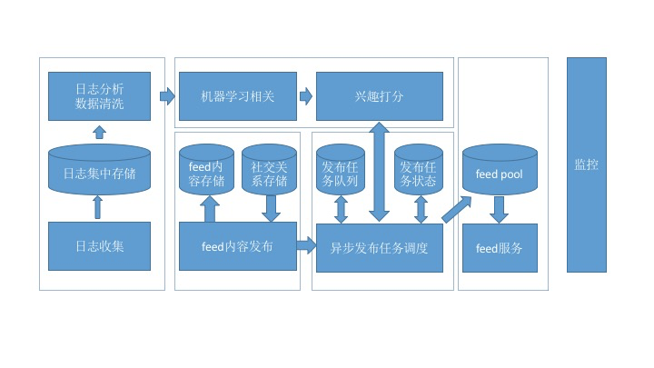
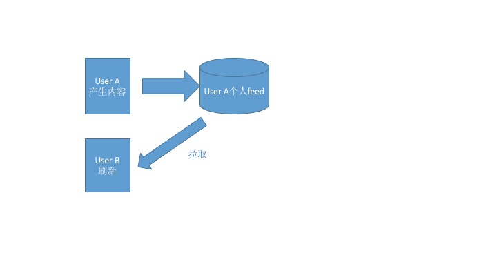
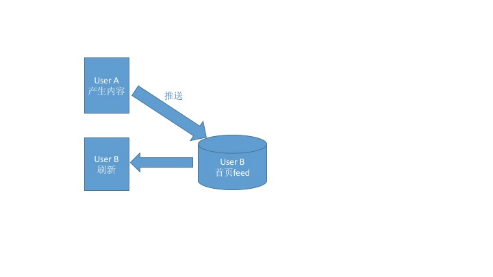

- 00 开篇词 用知识去对抗技术不平等.md.html
- 01 你真的需要个性化推荐系统吗_.md.html
- 02 个性化推荐系统有哪些绕不开的经典问题？.md.html
- 03 这些你必须应该具备的思维模式.md.html
- 04 画鬼容易画人难：用户画像的“能”和“不能”.md.html
- 05 从文本到用户画像有多远.md.html
- 06 超越标签的内容推荐系统.md.html
- 07 人以群分，你是什么人就看到什么世界.md.html
- 08 解密“看了又看”和“买了又买”.md.html
- 09 协同过滤中的相似度计算方法有哪些.md.html
- 10 那些在Netflix Prize中大放异彩的推荐算法.md.html
- 11 Facebook是怎么为十亿人互相推荐好友的.md.html
- 12 如果关注排序效果，那么这个模型可以帮到你.md.html
- 13 经典模型融合办法：线性模型和树模型的组合拳.md.html
- 14 一网打尽协同过滤、矩阵分解和线性模型.md.html
- 15 深度和宽度兼具的融合模型 Wide and Deep.md.html
- 16 简单却有效的Bandit算法.md.html
- 17 结合上下文信息的Bandit算法.md.html
- 18 如何将Bandit算法与协同过滤结合使用.md.html
- 19 深度学习在推荐系统中的应用有哪些_.md.html
- 20 用RNN构建个性化音乐播单.md.html
- 21 构建一个科学的排行榜体系.md.html
- 22 实用的加权采样算法.md.html
- 23 推荐候选池的去重策略.md.html
- 24 典型的信息流架构是什么样的.md.html
- 25 Netflix个性化推荐架构.md.html
- 26 总览推荐架构和搜索、广告的关系.md.html
- 27 巧妇难为无米之炊：数据采集关键要素.md.html
- 28 让你的推荐系统反应更快：实时推荐.md.html
- 29 让数据驱动落地，你需要一个实验平台.md.html
- 30 推荐系统服务化、存储选型及API设计.md.html
- 31 推荐系统的测试方法及常用指标介绍.md.html
- 32 道高一尺魔高一丈：推荐系统的攻防.md.html
- 33 和推荐系统有关的开源工具及框架介绍.md.html
- 34 推荐系统在互联网产品商业链条中的地位.md.html
- 35 说说信息流的前世今生.md.html
- 36 组建推荐团队及工程师的学习路径.md.html
- 加餐 推荐系统的参考阅读.md.html
- 结束语 遇“荐”之后，江湖再见.md.html
- 捐赠
24 典型的信息流架构是什么样的
从今天起，我们不再单独介绍推荐算法的原理，而是开始进入一个新的模块——工程篇。
在工程实践的部分中，我首先介绍的内容是当今最热门的信息流架构。
信息流是推荐系统应用中的当红炸子鸡，它表现形式有很多：社交网络的动态信息流、新闻阅读的图文信息流、短视频信息流等等。
如果要搭建一个自己的信息流系统，它应该是怎么样的呢？今天，我就来带你一探信息流架构的究竟。
整体框架
信息流，通常也叫作feed，这个英文词也很有意思，就是“喂”给用户的意思。
传统的信息流产品知识简单按照时间排序，而被推荐系统接管后的信息流逐渐成为主流，按照兴趣排序，也叫作“兴趣feed”。
所以我们通常提到信息流，或者兴趣feed，其实都是在说同一个话题。
这里温馨提示一下：如果要搜索feed相关的技术文章，你应该用“Activity Stream”作为关键词去搜，而不应该只用“feed”搜索，Activity Stream之于feed，就好比多潘立酮之于吗丁啉，前者是行话，后者是通俗说法。
要实现一个信息流，整体逻辑上是比较清楚的。可以划分为两个子问题。
- 如何实现一个按照时间顺序排序的信息流系统？
- 如何给信息流内容按照兴趣重排序？
我这里先给出一个整体的框架，然后再分别详谈。

这张架构图划分成几个大的模块：日志收集、内容发布、机器学习、信息流服务、监控。这里分别介绍一下：
- 日志收集，是所有排序训练的数据来源，要收集的最核心数据就是用户在信息流上产生的行为，用于机器学习更新排序模型；
- 内容发布，就是用推或者拉的模式把信息流的内容从源头发布到受众端；
- 机器学习，从收集的用户行为日志中训练模型，然后为每一个用户即将收到的信息流内容提供打分服务；
- 信息流服务，为信息流的展示前端提供Rest API；
- 监控，这是系统的运维标配，保证系统的安全和稳定等。
数据模型
信息流的基本数据有三个：用户（User）、内容（Activity）和关系（Connection）。- 用户不用说，就是区别不同用户的身份ID，我来说一说其他的两种。
1.内容即Activity。
用于表达Activity的元素有相应的规范，叫作Atom，你可以参考它并结合产品需求，定义出自己的信息流数据模型来。
根据Atom规范的定义，一条Activity包含的元素有：Time、Actor、Verb、Object、Target、Title、Summary。下面详细解释一下这些元素。
- Time：即“Activity发生的时间”。
- Actor：即“Activity由谁发出的”。通常Actor就是用户ID，但是我们也可以扩展到其他拟人化物体上，如关注的一个“店铺”，收藏的一部“电影”，或者用户喜欢的一个标签或者分类。也就是和用户建立连接的另一端。
- Verb：动词，就是连接的名字，比如“Follow”“Like”等，也可以是隐含的连接，如挖掘出的用户兴趣词和用户之间这种潜规则。
- Object：即动作作用到最主要的对象，只能有一个，比如一个人赞过的一张照片，店铺上新的一件商品，一个分类下一篇新的文章。
- Target：动作的最终目标，与verb有关，可以没有。它对应英语中介词to后接的事物，比如“John saved a movie to his wishlist”（John保存了一部电影到清单里），这里电影就是Object，而清单就是Target。
- Title：这个是Activity的标题，用自然语言描述，用于展示给用户。
- Summary：通常是一小段HTML代码，是对这个Activity的描述，还可能包含类似缩略图这样的可视化元素，可以理解为Activity的视图，不是必须的。
举个例子： 2016年5月6日23:51:01（Time）@刑无刀（Actor） 分享了（Verb） 一条微博（Object） 给 @极客时间 （Target）。把前面这句话去掉括号后的内容就是它的Title，Summary暂略。
除了上面的字段外，还有一个隐藏的ID，用于唯一标识一个Activity。社交电商Etsy在介绍他们的信息流系统时，还创造性地给Activity增加了Owner属性，同一个Activity可以属于不同的用户，相当于考虑了方向。
2.关系即连接。
互联网产品里处处皆连接，有强有弱，好友关系、关注关系等社交是较强的连接，还有点赞、收藏、评论、浏览，这些动作都可以认为是用户和另一个对象之间建立了连接。有了连接，就有信息流的传递和发布。
定义一个连接的元素有下面几种。
- From：连接的发起方。
- To：被连接方。
- Type/Name：就是Atom模型中的Verb，即连接的类型：关注、加好友、点赞、浏览、评论，等等。
- Affinity：连接的强弱。
如果把建立一个连接视为一个Activity模型的话，From就对应Activity中的Actor，To就对应Activity中的Object。
连接的发起从From到To，内容的流动从To到From。Connection和Activity是相互加强的，这是蛋和鸡的关系：有了Activity，就会产生Connection，有了Connection，就可以“喂”（feed）给你更多的Activity。
在数据存储上可以选择的工具有下面的几种：
Activity存储可以采用MySQL、Redis、Cassandra等；- Connection存储可以采用MySQL；- User存储可以采用MySQL。
动态发布
用户登录或者刷新后，信息流是怎么产生的呢？我们把动态内容出现在受众的信息流中这个过程称为Fan-out，直觉上是这样实现的：
- 获取用户所有连接的终点（如好友、关注对象、兴趣标签）；
- 获取这些连接终点（关注对象）产生的新内容（Activity）；
- 按照某个指标排序后输出。
上面这个步骤别看简单，在一个小型的社交网络上，通常很有效，而且Twitter早期也是这么做的。这就是江湖行话说的“拉”模式（Fan-out-on-load），即：信息流是在用户登录或者刷新后实时产生的。这里有一个示意图，你可以点击查看。

拉模式就是当用户访问时，信息流服务才会去相应的发布源拉取内容到自己的feed区来，这是一个阻塞同步的过程。“拉”模式的好处也显而易见，主要有下面两种。
- 实现简单直接：一行SQL语句就搞定了。
- 实时：内容产生了，受众只要刷新就看得见。
但是也有很大的不足：
- 随着连接数的增加，这个操作的复杂度指数级增加；
- 内存中要保留每个人产生的内容；
- 服务很难做到高可用。
与“拉”模式对应，还有一个“推”模式（Fan-out-on-write）。我在文稿里放了一张图，你可以点击查看。

当一个Actor产生了一条Activity后，不管受众在不在线，刷没刷新，都会立即将这条内容推送给相应的用户（即和这个Actor建立了连接的人），系统为每一个用户单独开辟一个信息流存储区域，用于接收推送的内容。如此一来，当用户登录后，系统只需要读取他自己的信息流即可。
“推”模式的好处显而易见：在用户访问自己的信息流时，几乎没有任何复杂的查询操作，所以服务可用性较高。
“推”模式也有一些不足。
- 大量的写操作：每一个粉丝都要写一次。
- 大量的冗余存储：每一条内容都要存储N份（受众数量）。
- 非实时：一条内容产生后，有一定的延迟才会到达受众信息流中。
- 无法解决新用户的信息流产生问题。
既然两者各有优劣，那么实际上就应该将两者结合起来，一种简单的结合方案是全局的：
- 对于活跃度高的用户，使用推模式，每次他们刷新时不用等待太久，而且内容页相对多一些；
- 对于活跃度没有那么高的用户，使用拉模式，当他们登录时才拉取最新的内容；
- 对于热门的内容生产者，缓存其最新的N条内容，用于不同场景下的拉取。
还有一种结合方案是分用户的，这是Etsy的设计方案：
- 如果受众用户与内容产生用户之间的亲密度高，则优先推送，因为更可能被这个受众所感兴趣；
- 如果受众用户与内容产生用户之间的亲密度低，则推迟推送或者不推送；
- 也不是完全遵循亲密度顺序，而是采用与之相关的概率。
在中小型的社交网络上，采用纯推模式就够用了，结合的方案可以等业务发展到一定规模后再考虑。
对于信息流的产生和存储可以选择的工具有：
- 用户信息流的存储可以采用Redis等KV数据库, 使用uid作为key。
- 信息流推送的任务队列可以采用Celery等成熟框架。
信息流排序
信息流的排序，要避免陷入两个误区：
- 没有目标；
- 人工量化。
第一个误区“没有目标”意思就是说，设计排序算法之前，一定要先弄清楚为什么要对时间序重排？希望达到什么目标？只有先确定目标，才能检验和优化算法。
第二个误区是“人工量化”，也就是我们通常见到的产品同学或者运营同学要求对某个因素加权、降权。这样做很不明智，主要是不能很好地持续优化。
目前信息流采用机器学习排序，以提升类似互动率，停留时长等指标，这已经成为共识。比如说提高互动率则需要下面几个内容。
首先，定义好互动行为包括哪些，比如点赞、转发、评论、查看详情等；
其次，区分好正向互动和负向互动，比如隐藏某条内容、点击不感兴趣等是负向的互动。
基本上到这里就可以设计成一个典型的二分类监督学习问题了，对一条信息流的内容，在展示给用户之前，预测其获得用户正向互动的概率，概率就可以作为兴趣排序分数输出。
能产生概率输出的二分类算法都可以用在这里，比如贝叶斯、最大熵、逻辑回归等。
互联网常用的是逻辑回归（Logistic Regression），谁用谁知道，用过的都说好；也有Facebook等大厂采用了逻辑回归加梯度提升树模型（又称GBDT）来对信息流排序，效果显著。
如今大厂都已经转向深度学习了，但我还是建议小厂或者刚起步的信息流先采用线性模型。
对于线性模型，一个重要的工作就是特征工程。信息流的特征有三类：
- 用户特征，包括用户人口统计学属性、用户兴趣标签、活跃程度等；
- 内容特征，一条内容本身可以根据其属性提取文本、图像、音频等特征，并且可以利用主题模型提取更抽象的特征。
- 其他特征，比如刷新时间、所处页面等。
排序模型在实际使用时，通常做成RPC服务，以供发布信息流时调用。
数据管道
信息流是一个数据驱动的系统，既要通过历史数据来寻找算法的最优参数，又要通过新的数据验证排序效果，所以搭建一个数据流管道就是大家翘首期盼的。
这个管道中要使用的相关数据可能有：
- 互动行为数据，用于记录每一个用户在信息流上的反馈行为；
- 曝光内容，每一条曝光要有唯一的ID，曝光的内容仅记录ID即可；
- 互动行为与曝光的映射关系，每条互动数据要对应到一条曝光数据；
- 用户画像内容，即用户画像，提供用户特征，具体请见我在第4、5、6三篇中的内容；
- 信息流的内容分析数据，提供内容特征，即物品画像。
对于一个从零开始的信息流，没必要做到在线实时更新排序算法的参数，所以数据的管道可以分成三块：
- 生成训练样本，可离线；
- 排序模型训练，可离线；
- 模型服务化，实时服务；
像Pinterest早期的管道也差不多就是这样。
在离线训练优化模型时，关注模型的AUC是否有提升，线上AB测试时关注具体的产品目标是否有提升，比如互动率等，同时还要根据产品具体形态关注一些辅助指标。
另外，互动数据相比全部曝光数据，数量会小得多，所以在生成训练数据时需要对负样本（展示了却没有产生互动的样本）进行采样，采样比例也是一个可以优化的参数。
固定算法和特征后，在0.1~0.9之间遍历对比实验，选择最佳的正负比例即可。经验比例在2:3左右，即负样本略大于正样本，你可以用这个比例做启发式搜索。
总结
今天我逐一梳理了实现一个通用信息流的关键模块，及其已有的轮子，从而能最大限度地降低开发成本。
这些对于一个中小型的社交网络来说已经足够，当你面临更大的社交网络，会有更多复杂的情况出现，尤其是系统上的。
所以，壮士，请好自为之，时刻观察系统的监控、日志的规模。
你在了解了典型的信息流架构之后，可以说一说Facebook这样的社交网络feed，和头条这样的资讯信息流之间的差别和共同点吗？欢迎给我留言。
© 2019 - 2023 Liangliang Lee. Powered by gin and hexo-theme-book.